A light bulb moment: including optical excitation and current in simulations of surface processes.¶
 |
 |
Motivation¶
Many applications require working in fluid environments, the inclusion of charge transport and interaction with light
|
solar cells 
|
batteries 
|
photocathode / anodes 
|
and of course study of material processes like weathering, corrosion, catalysis
How do we see water density above a surface?¶
How do we see water density above a surface?¶
AFM - we'll see that this allows 3D mapping of the interface structure.
Scanning probes¶
 |
Atomic force microscopy (left) and Scanning Tunnelling microscopy (right) |
 |
- Local measurements.
- Invasive?
- Ambient or liquid conditions?
 |
2 sided strategy:manipulate both experiment and simulation data for comparison K Miyazawa, N Kobayashi, MW, AL Shluger, K Amano, T Fukuma, Nanoscale 8, 7334 (2016) |
 |
Theory: Solvent tip model¶
We don't know the actual tip apex - historical problem with AFM.
Hypothesize that there are likely strongly bound water molecules at the tip apex - and take them as the tip
They feed force back onto the cantilever.

M Watkins, B Reischl, The Journal of chemical physics 138, 154703 (2013)
Theory: Solvent tip model¶
We don't know the actual tip apex - historical problem with AFM.
Hypothesize that there are likely strongly bound water molecules at the tip apex - and take them as the tip

Statistical mechanical model¶
pure water model leads to
$$ \Delta\Delta G(\mathbf{r}) = -k_BT \ln \frac{\rho(\mathbf{r})}{\rho_{\rm{bulk}}} $$for the free energy change of bringing the tip model (water molecule) from the bulk liquid to $\mathbf{r}$
$$ F(\mathbf{r}) = \frac{\partial \Delta\Delta G(\mathbf{r})}{\partial z} = \frac{k_bT}{\rho(\mathbf{r})}\frac{ \partial \rho(\mathbf{r})}{\partial z} $$this is the 'short range' force exerted on the tip apex.
M Watkins, B Reischl, The Journal of chemical physics 138, 154703 (2013)
Macro vs Nano¶
|
|
|
cantilever is macroscopic, tip apex is nanoscopic
experiment measures frequency change due to all interactions - macro + nano
Experiment: Macroscopic effects¶
removed empirically by subtracting force from averaged long range scan data over several surface locations

|
K Miyazawa, N Kobayashi, MW, AL Shluger, K Amano, T Fukuma, Nanoscale 8, 7334 (2016)
Experiment: fast AFM¶
3D AFM technique and pattern matching routines for massive speed up in image collection efficiency.
| 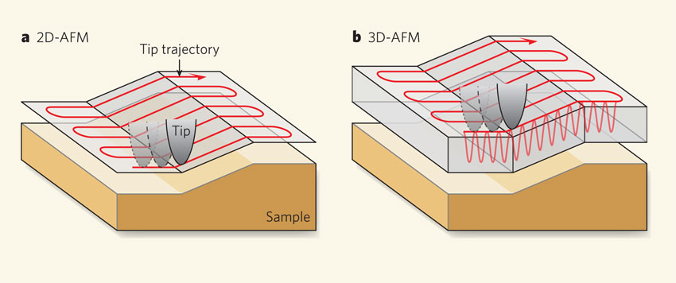 |
| 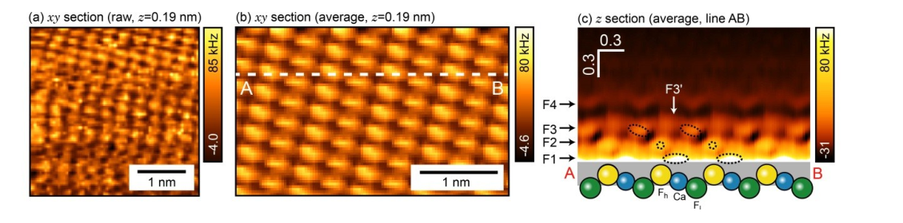 |
-
Allows image collection within few minutes of exposure of surface to liquid
- (We also use it on the simulation data)
-
Enables data collection in pure water.
-
No longer true atomic resolution
K Miyazawa, N Kobayashi, MW, AL Shluger, K Amano, T Fukuma, Nanoscale 8, 7334 (2016)
Qualitative comparison of data¶

|
#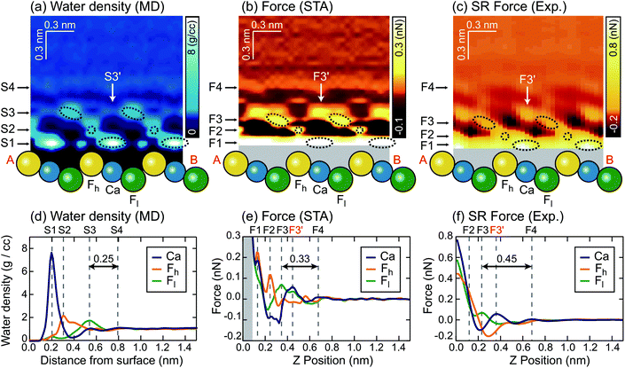 |
K Miyazawa, N Kobayashi, MW, AL Shluger, K Amano, T Fukuma, Nanoscale 8, 7334 (2016)
Can also compare to MD free energy calculation with explicit tips¶
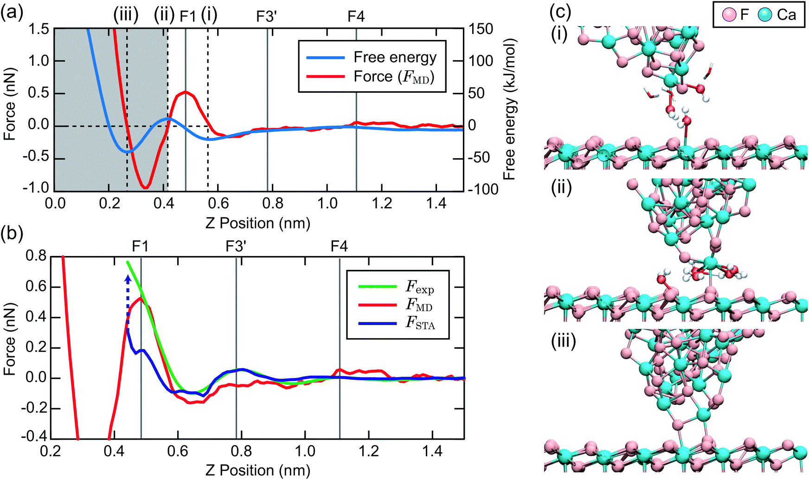
STA does better than an incorrect tip model
K Miyazawa, N Kobayashi, MW, AL Shluger, K Amano, T Fukuma, Nanoscale 8, 7334 (2016)
Realistic environment¶
The above were all obtained in pure water.
requires complicated experimental protocols
not a realistic environment for many of the motivations
What changes in electrolyte solution?¶
Comparison to supersaturated solution¶
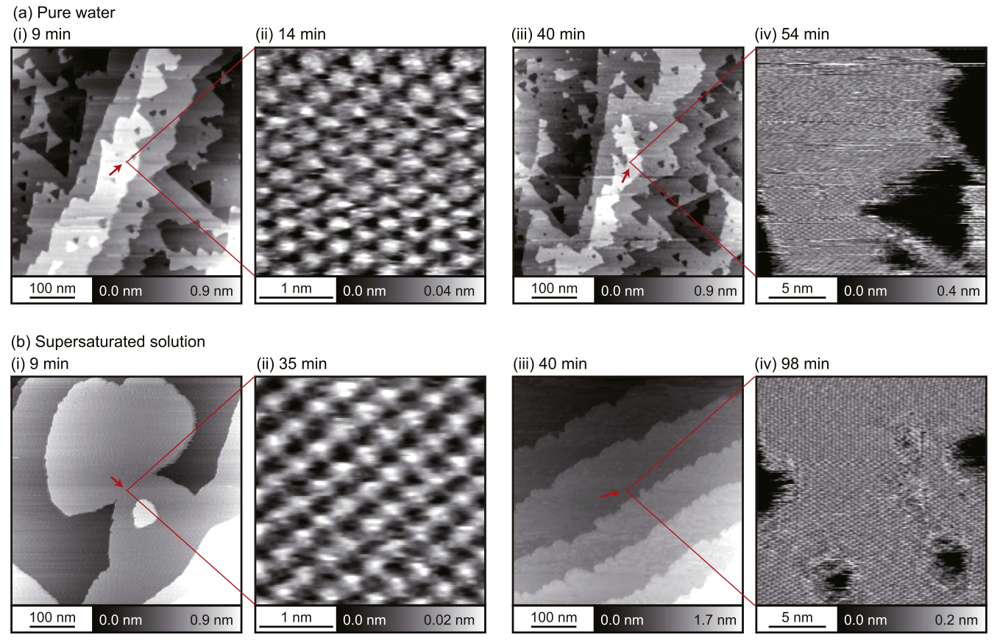
- The supersaturated solution ( s = 100 ) was prepared by mixing the same amounts of 38 mM CaCl$_2$ and 76 mM KF solutions
K Miyazawa, MW, AL Shluger, T Fukuma, Nanotechnology 28, 245701 (2017)
Adsorbed ions?¶
- we use the same protocol as before
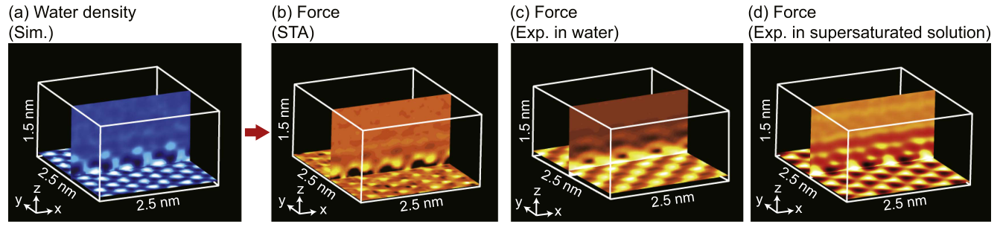
K Miyazawa, MW, AL Shluger, T Fukuma, Nanotechnology 28, 245701 (2017)
Adsorbed ions?¶
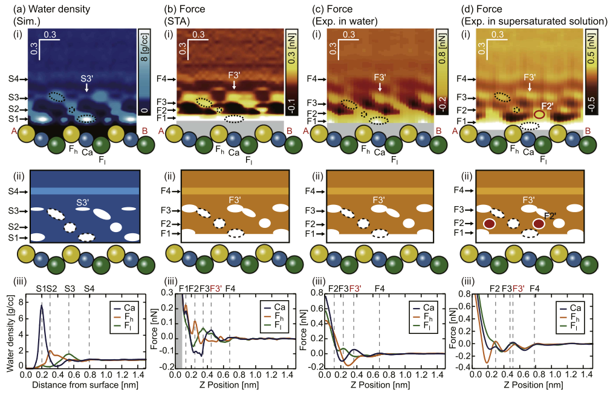
Possible specific cation adorption.
Challenge for simulation¶
Conclusions¶
- Evidence suggests here that stable tips are not very invasive – measurement of equilibrium water density
- Theory vs experiment: short range forces above Ca.
- Better agreement between implicit tip model and experiment than explicit MD
- better tip models are needed!
- Towards mapping specific ion adsorption sites and exploring electrolyte solutions
- need to be cleverer than brute force to simulate
Confined Water¶
over step edges, we need better simulation methods:
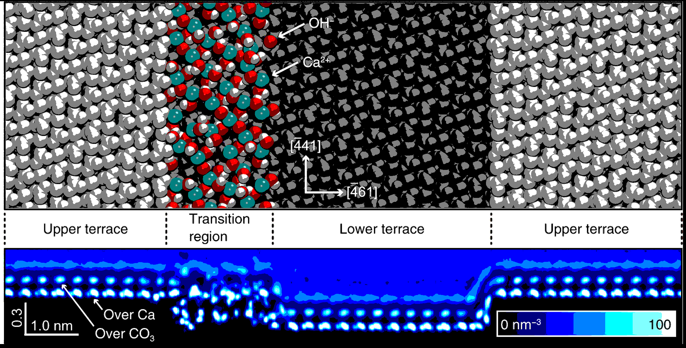
Miyata, Kazuki, et al. "Dissolution Processes at Step Edges of Calcite in Water Investigated by High-Speed Frequency Modulation Atomic Force Microscopy and Simulation." Nano Letters (2017).
MOFs, nanotubes, interfaces ...
need water structure for accurate description.¶
3D-RISM should also give approximately accurate dielectric constant.
Integral Equation Theory - 3D-RISM¶
alternative to implicit solvation models. We'll be resubmitting a grant application for this soon.
3D-RISM: calculation requires the computation of several 3D correlation functions for each solute atom interacting with each solvent site. The distinct difference of 3D-RISM compared to implicit solvent models like PCM or COSMO is that a fully atomistically detailed solvent is included in the model, but statistically averaged rather than taking up an instantaneous configuration.
In particular we gain access to the solvent density distribution $\rho_\gamma(r) = \rho_{\gamma} g_\gamma(r)$ in terms of the bulk solvent density $\rho_\gamma$ and the 3D site distribution functions, $g_\gamma(r)$, for each solvent site $\gamma$.
Ornstein-Zernike like equations:¶
$$ g_\gamma (r) − 1 = \sum_\alpha \int dr′ c_\alpha(r − r′) \chi_{\alpha \gamma}(r′) $$where the direct site correlation function $c_\gamma(r)$ and the site-site solvent susceptibility $\chi_{\alpha \gamma}(r′)$ have been introduced.
$\chi_{\alpha \gamma}(r′)$ carries the required information of the solvent geometry (relative positions of sites) and total site-site correlation functions for the pure solvent liquid, which are obtained from 1D-RISM calculations.
The Ornstein-Zernike type equations are complemented by closure relations: $$ g_\gamma (r) = \begin{cases} \exp(d_\gamma), & \text{for } d_\gamma \leq 0 \\ 1 + d_\gamma, & \text{for } d > 0\\ \end{cases} $$
where: $d_\gamma = −\beta u_\gamma(r) + g_\gamma(r) − 1 − c_\gamma(r)$
which includes the potential interaction, $u_\gamma(r)$ between a solvent site and all of the solute sites.
These are solved self-consistently to get the solvent distribution.
KS-DFT-3D-RISM¶
if we have a water density we can include its effects within a KS matrix for DFT part of the system.
Similarly we can couple the DFT density to the 3D-RISM calculation by adding the electrostatic potential or other terms as an external potential the contributes to the solvent site potential energy at (r).
Why are we interested in excited states and optical properties?¶
- Photochemistry / catalysis
- Energy conversion
- Solar cells
- Spectroscopy
Electron Transport - NEGF
Electron density of states (DOS)
Straightforward approach: $$ \textbf{H}\textbf{C} = \textbf{E}\textbf{S}\textbf{C} \\ \mathrm{DOS}(\omega) = \frac{dN/d\omega}{\Omega} \\ $$
Green's function method $$ \textbf{G}^\mathrm{r}(\omega) = \left(\omega \textbf{S} - \textbf{H}\right)^{-1}\\ \begin{gather*} \mathrm{DOS}(\omega) = -\frac{1}{\pi}\lim_{\eta \to 0^+}\mathrm{Tr}\left\{ \right. \left. \mathrm{Im}\left[ \textbf{G}^\mathrm{r}(\omega+i\eta)\textbf{S}\right]\right\} \end{gather*} $$
Implemented in CP2K code
| 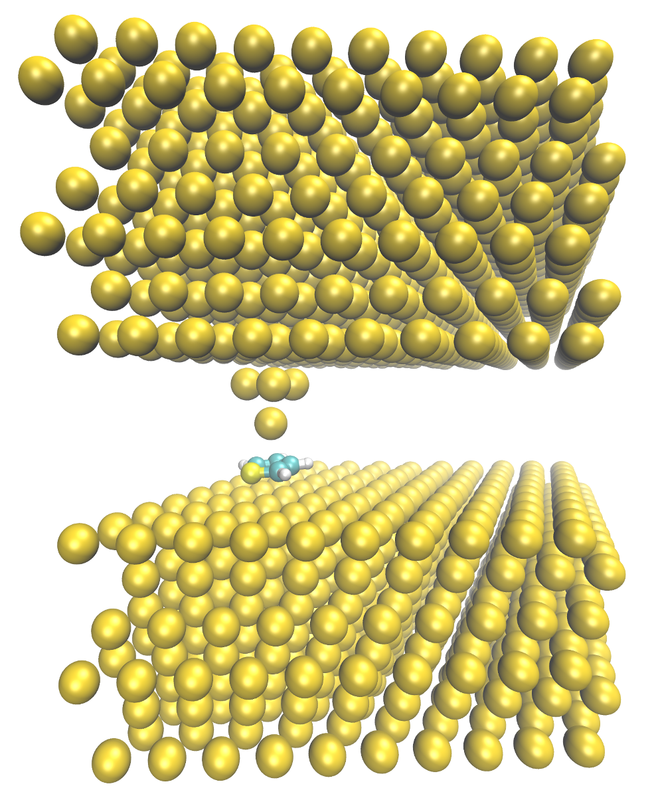 |

|
Calculation of retarded surface Green's function

Model system
Algorithm

TDDFT¶
DFT normally thought of as ground state theory.
But, time dependent version actually has quite long history - it didn't really achieve prominence until Casida's reformulation caught on with Quantum Chemistry community.
TDDFT maps onto CIS and TDHF methods already well known in QC community, in similar way groundstate DFT -> HF .
Electron hole pairs¶
The transition density is a linear combination of $\color{red}{electron}-\color{blue}{hole}$ pairs
\begin{gather*} n_{j, \tau}^{(1)} = \sum_{j \in HOMOs} \left ( \color{blue}{\psi_{j,\sigma}^*} (r) \color{red}{\psi_{j,\sigma}^{(-)}(r)} + \color{red}{\psi_{j,\sigma}^{(-)*}(r)}\color{blue}{ \psi_{j,\sigma}(r)} \right) \end{gather*}$$ \color{red}{\psi_{i, \sigma}^{(\pm)}(r)} = \sum_{k \in LUMOs} c_{ik, \sigma}\psi_{k,\sigma} (r) $$$\color{blue}{\psi_{j,\sigma} (r) }$ contributes to the hole, $\color{red}{\psi_{j,\sigma}^{(-)}(r)}$ contributes to the electron.
- Each of the terms in the sum are single determinant excitation in Quantum Chemical language.
- in the ground state the $\psi_{j,\sigma}$ function would be fully occupied, but here density has be transferred to $\psi_{j,\sigma}^{(-)}(r)$ .
- The sum over all the HOMOs allows the hole to relax by mixing in other occupied orbitals.
- Typical transitions will be dominated by a single determinant - mixing of others gives orbital relaxation.
Gaussians and Plane waves¶
For hybrid functionals we add in an extra term that comes from the response of the exact exchange part of the functional.
With hybrid density functionals the original action functional becomes a mixture of the TDDFT outlined above and TDHF.
- The coulomb interaction in standard functionals actually becomes an exchange like term, dependent on wavefunction overlap between the electron and hole.
Semi-local functionals have incorrect long-range behaviour because of this - well known underestimation of charge transfer states.
Semi-local terms - grids¶
Semi-local DFT terms are calculated on realspace multigrids
\begin{gather} \mathbf{K_{\nu \mu \sigma}} = \big{<} \phi_{\nu} \big{|} \sum_{\tau=\alpha, \beta} \big{[} \color{red}{\int_{r'} \text{d}r' \frac{n_{j, \tau}^{(1)} (r')}{\mid r' - r\mid} + f_{XC,\sigma,\tau} (r,r';\pm \omega)) n_{j, \tau}^{(1)} (r')} \big{]} \big{|} \phi_{\mu} \big{>} \end{gather}- first red term is a potential that arises from the transition density
- 2nd term is the 2nd functional derivative of the GGA part of the functional $$ \color{red}{f_{xc}(r,t; r',t') ≈ δ(t − t')\frac{\delta^2 E_{xc}^{LSDA/GGA}[n]}{ \delta n(r,t)\delta n(r',t')}_{n(r,t)=n^{(0)}(r,t)}} $$
For each trial vector this looks like a normal KS build.
Hybrid functionals¶
the exact exchange energy term in the ground state functional becomes a coulomb type interaction between the electron and hole density for each excitation.
\begin{gather} \mathbf{K_{\nu \mu \sigma}} = \big{<} \phi_{\nu} \big{|} \sum_{\tau=\alpha, \beta} \big{[} \color{green} { c_{HF} \frac{K(r,r')}{ {\mid r' - r\mid}}} + \color{red}{ \int_{r'} \text{d}r' \frac{n_{j, \tau}^{(1)} (r')}{\mid r' - r\mid}} + \color{green}{(1-c_{HF})} f_{XC,\sigma,\tau} (r,r';\pm \omega)) n_{j, \tau}^{(1)} (r') \big{]} \big{|} \phi_{\mu} \big{>} \end{gather}where the symbolic $\color{green}{K(r,r')}$ operator exchanges electrons, like in HF theory. In this case operating on an exchange type term, it gives an electron-hole coulomb interaction. Symbollically, terms of the form:
$$ \color{green}{ \big<\psi_{HOMOS} (r) \psi_{HOMOS} (r) \big| { \frac{1}{\mid r' - r\mid}} \big| \psi_{LUMOS} (r') \psi_{LUMOS} (r') \big> } $$Note this is like a coloumb interaction screened by an effective dielectric function equal to $\color{green}{c_{HF}^{-1}}$.
Good news! Example - porphyrin derivative on NaCl¶
| 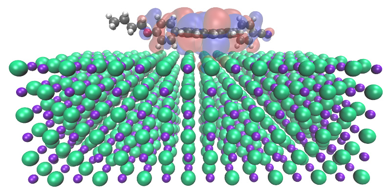 |  |
- 960 atoms of NaCl
- 1031 atoms total
- TZV2P basis on molecule
- DZVP basis on NaCl
- 11790 Cartesian basis functions
- 7898 electrons
- ~2 hours on 192 cores to converge 10 lowest transition energies (12 iterations)
TDDFPT:¶
experimental peaks according to the Philipda Luangprasert's Master Thesis: 2.2 eV (small), 2.95 eV (broad, main), 3.3 eV (small);
PBE-D3: 2.37/2.40 (medium), 2.60 (medium), 3.22 (small);
B3LYP-D3 (using PBE-D3 optimal geometry): 2.19 eV (small), 3.23 eV (medium), 3.41 eV (medium), 3.78 (small).
The structure of the UV spectrum is well reproduced, but the last 3 excitation energies are overestimated by approximately 0.4 eV. This shift is probably due to unoptimised molecular structure (it was optimized using the PBE-D3 xc-functional, not B3LYP-D3) and/or the lack of diffuse basis functions.
Timings:¶
- TDDFPT/PBE-D3:
- CPU Time: 956957 s = 265.8 core*hours (4.0 kAU);
- MPI Wait: 45884 s = 12.7 core*hours (0.2 kAU);
- TDDFPT/B3LYP-D3/ADMM [Zn] cFIT9, [H,C,N,O] cFIT3, [Na,Cl] cFIT3 with 2 the most diffuse functions removed:
- CPU Time: 1517936 s = 421.6 core*hours (6.3 kAU);
- MPI Wait: 106947 s = 29.7 core*hours (0.4 kAU);
- TDDFPT/B3LYP-D3/ADMM [Zn] cFIT9, [H,C,N,O,Na,Cl] cFIT3:
- CPU Time: 3511819 s = 975.5 core*hours (14.6 kAU);
- MPI Wait: 185165 s = 51.4 core*hours ( 0.8 kAU);
maximum deviation in excitation energies with respect to the ones computed using the reduced auxillary basis set: 0.05 eV .
Excited states during MD of TiO$_2$ surface¶
| 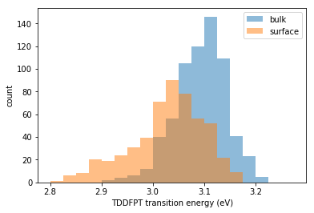 |  |
HOMO-LUMO gaps and lowest energy excitation from ~2 ps simulation of Rutile TiO$_2$ bulk and (110 surface)
Linear response summary¶
- gives electron transitions and detailed information on the types of transition
- cost will depend on system size, but increase linearly with the number of excited states that you want to calculate
- supports calculations using hybrid functionals and the ADMM approximation
- current implementation is very much in beta, but is being actively developed.
Thanks to¶
- EPSRC for funding two eCSE software development projects
- Alex Shluger, University College London
- Lev Kantorovitch, King's College London
- Iain Bethune, STFC, Daresbury
- Takeshi Fukuma, Kanazawa University
- Adam Foster, Aalto
- Andrew Rohl, Julian, Bernhard Reischl, Curtin University
Lincoln is here¶
 |
 |